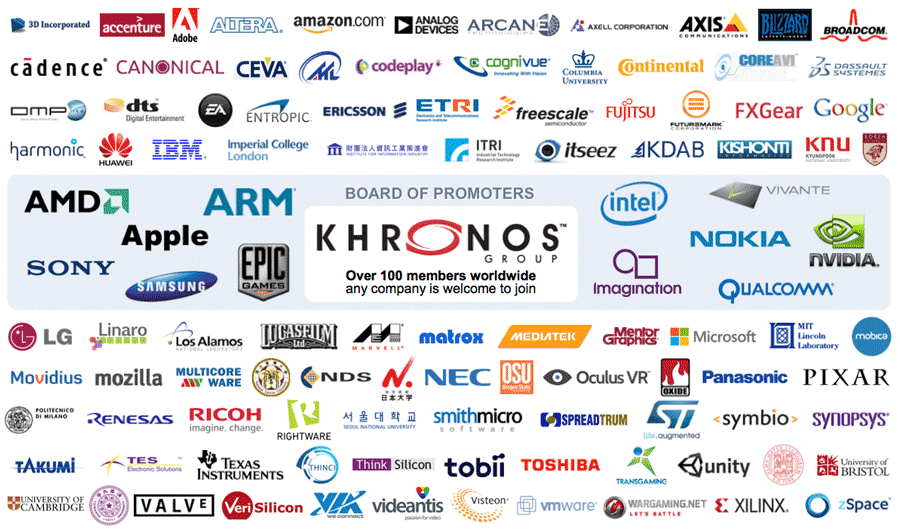
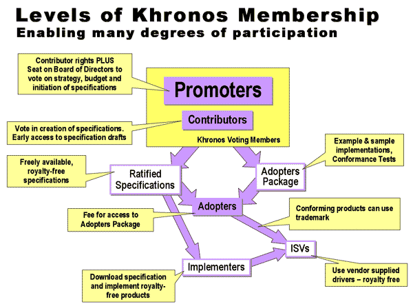

Brendan Whitfield - Andrew Mandula - Fernando Ellis
Wat
opengl desc
"open specifications and associated conformance tests that enable hardware and software communities to effectively communicate with each other" - Khronos Group
Controlled & maintained by
The Khronos Group
- Non-Profit, Member-Funded Consortium
-
Founded by
- 3Dlabs
- ATI
- Discreet
- Evans & Sutherland
- Intel
- NVIDIA
- Silicon Graphics (SGI)
- Sun Microsystem
OpenGL was initially created by the OpenGL Architecture Review Board in 1992, but transferred all control to the Khronos Group in 2006
Khronos Group, is an assemblage of corporations seeking a common goal (the OpenGL standard)
Member Summary
-
84 Contributors
Participants with voting rights
-
15 Academic Members
Participants with NO voting rights
-
12 Promoters
Functions as Board of Directors
Members of the Khronos Group design, document, and create conformance tests for the OpenGL standard.
Copies of the standard, as well as header files, are freely available to the public.
All 825 pages of it
Process
Standards in development are classified
for fear of patent trolling